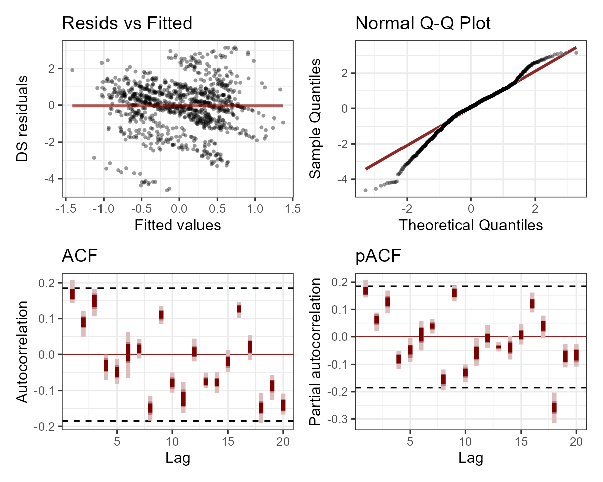
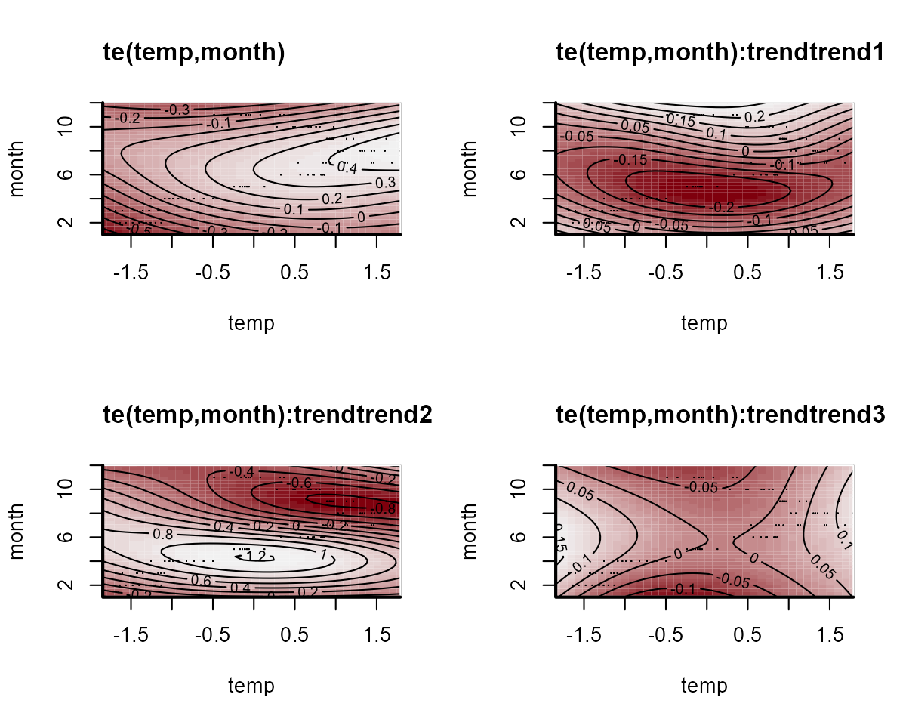
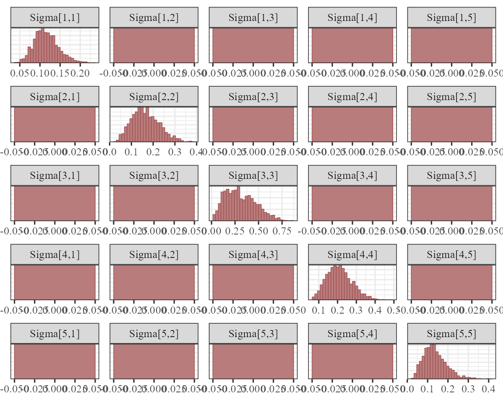
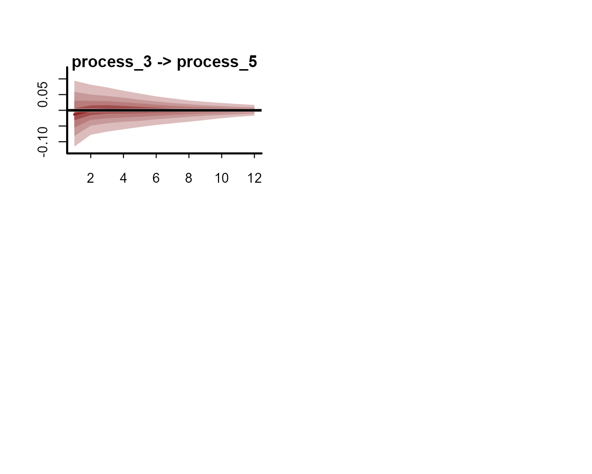
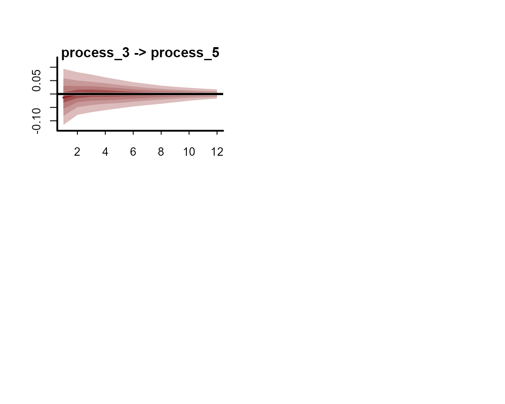
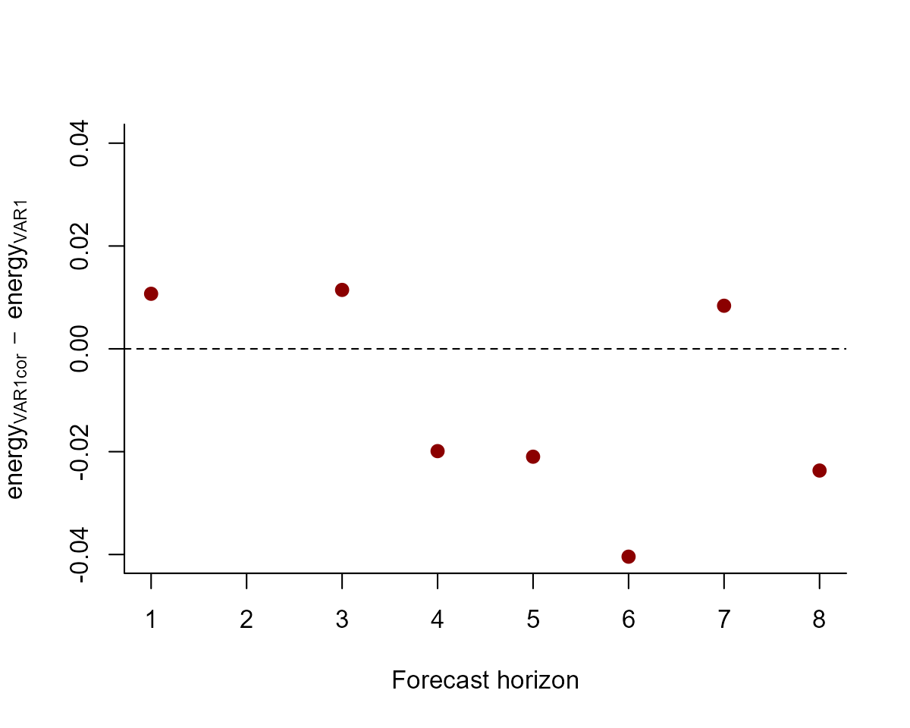

State-Space models in the mvgam package
Nicholas J Clark
2023-09-28
Source:vignettes/trend_formulas.Rmd
trend_formulas.RmdThe purpose of this vignette is to show how the mvgam
package can be used to fit and interrogate State-Space models with
nonlinear effects.
State-Space Models

State-Space models allow us to separately make inferences about the
underlying dynamic process model that we are interested in
(i.e. the evolution of a time series or a collection of time series) and
the observation model (i.e. the way that we survey / measure
this underlying process). This is extremely useful in ecology because
our observations are always imperfect / noisy measurements of the thing
we are interested in measuring. It is also helpful because we often know
that some covariates will impact our ability to measure accurately
(i.e. we cannot take accurate counts of rodents if there is a
thunderstorm happening) while other covariate impact the underlying
process (it is highly unlikely that rodent abundance responds to one
storm, but instead probably responds to longer-term weather and climate
variation). A State-Space model allows us to model both components in a
single unified modelling framework. A major advantage of
mvgam is that it can include nonlinear effects and random
effects in BOTH model components while also capturing dynamic
processes.
Lake Washington plankton data
The data we will use to illustrate how we can fit State-Space models
in mvgam are from a long-term monitoring study of plankton
counts (cells per mL) taken from Lake Washington in Washington, USA. The
data are available as part of the MARSS package and can be
downloaded using the following:
We will work with five different groups of plankton:
outcomes <- c('Greens', 'Bluegreens', 'Diatoms', 'Unicells', 'Other.algae')As usual, preparing the data into the correct format for
mvgam modelling takes a little bit of wrangling in
dplyr:
# loop across each plankton group to create the long datframe
plankton_data <- do.call(rbind, lapply(outcomes, function(x){
# create a group-specific dataframe with counts labelled 'y'
# and the group name in the 'series' variable
data.frame(year = lakeWAplanktonTrans[, 'Year'],
month = lakeWAplanktonTrans[, 'Month'],
y = lakeWAplanktonTrans[, x],
series = x,
temp = lakeWAplanktonTrans[, 'Temp'])})) %>%
# change the 'series' label to a factor
dplyr::mutate(series = factor(series)) %>%
# filter to only include some years in the data
dplyr::filter(year >= 1965 & year < 1975) %>%
dplyr::arrange(year, month) %>%
dplyr::group_by(series) %>%
# z-score the counts so they are approximately standard normal
dplyr::mutate(y = as.vector(scale(y))) %>%
# add the time indicator
dplyr::mutate(time = dplyr::row_number()) %>%
dplyr::ungroup()Inspect the data structure
head(plankton_data)## # A tibble: 6 × 6
## year month y series temp time
## <dbl> <dbl> <dbl> <fct> <dbl> <int>
## 1 1965 1 -0.542 Greens -1.23 1
## 2 1965 1 -0.344 Bluegreens -1.23 1
## 3 1965 1 -0.0768 Diatoms -1.23 1
## 4 1965 1 -1.52 Unicells -1.23 1
## 5 1965 1 -0.491 Other.algae -1.23 1
## 6 1965 2 NA Greens -1.32 2
dplyr::glimpse(plankton_data)## Rows: 600
## Columns: 6
## $ year <dbl> 1965, 1965, 1965, 1965, 1965, 1965, 1965, 1965, 1965, 1965, 196…
## $ month <dbl> 1, 1, 1, 1, 1, 2, 2, 2, 2, 2, 3, 3, 3, 3, 3, 4, 4, 4, 4, 4, 5, …
## $ y <dbl> -0.54241769, -0.34410776, -0.07684901, -1.52243490, -0.49055442…
## $ series <fct> Greens, Bluegreens, Diatoms, Unicells, Other.algae, Greens, Blu…
## $ temp <dbl> -1.2306562, -1.2306562, -1.2306562, -1.2306562, -1.2306562, -1.…
## $ time <int> 1, 1, 1, 1, 1, 2, 2, 2, 2, 2, 3, 3, 3, 3, 3, 4, 4, 4, 4, 4, 5, …Note that we have z-scored the counts in this example as that will make it easier to specify priors (though this is not completely necessary; it is often better to build a model that respects the properties of the actual outcome variables)
plot_mvgam_series(data = plankton_data, series = 'all')

It is always helpful to check the data for NAs before
attempting any models:
image(is.na(t(plankton_data)), axes = F,
col = c('grey80', 'darkred'))
axis(3, at = seq(0,1, len = NCOL(plankton_data)),
labels = colnames(plankton_data))We have some missing observations, but this isn’t an issue for
modelling in mvgam. A useful property to understand about
these counts is that they tend to be highly seasonal. Below are some
plots of z-scored counts against the z-scored temperature measurements
in the lake for each month:
plankton_data %>%
dplyr::filter(series == 'Other.algae') %>%
ggplot(aes(x = time, y = temp)) +
geom_line(size = 1.1) +
geom_line(aes(y = y), col = 'white',
size = 1.3) +
geom_line(aes(y = y), col = 'darkred',
size = 1.1) +
ylab('z-score') +
xlab('Time') +
ggtitle('Temperature (black) vs Other algae (red)')
plankton_data %>%
dplyr::filter(series == 'Diatoms') %>%
ggplot(aes(x = time, y = temp)) +
geom_line(size = 1.1) +
geom_line(aes(y = y), col = 'white',
size = 1.3) +
geom_line(aes(y = y), col = 'darkred',
size = 1.1) +
ylab('z-score') +
xlab('Time') +
ggtitle('Temperature (black) vs Diatoms (red)')
plankton_data %>%
dplyr::filter(series == 'Greens') %>%
ggplot(aes(x = time, y = temp)) +
geom_line(size = 1.1) +
geom_line(aes(y = y), col = 'white',
size = 1.3) +
geom_line(aes(y = y), col = 'darkred',
size = 1.1) +
ylab('z-score') +
xlab('Time') +
ggtitle('Temperature (black) vs Greens (red)')
We will have to try and capture this seasonality in our process model, which should be easy to do given the flexibility of GAMs. Next we will split the data into training and testing splits:
plankton_train <- plankton_data %>%
dplyr::filter(time <= 112)
plankton_test <- plankton_data %>%
dplyr::filter(time > 112)Now time to fit some models. This requires a bit of thinking about
how we can best tackle the seasonal variation and the likely dependence
structure in the data. These algae are interacting as part of a complex
system within the same lake, so we certainly expect there to be some
lagged cross-dependencies underling their dynamics. But if we do not
capture the seasonal variation, our multivariate dynamic model will be
forced to try and capture it, which could lead to poor convergence and
unstable results (we could feasibly capture cyclic dynamics with a more
complex multi-species Lotka-Volterra model, but ordinary differential
equation approaches are beyond the scope of mvgam).
Capturing seasonality
First we will fit a model that does not include a dynamic component,
just to see if it can reproduce the seasonal variation in the
observations. This model introduces hierarchical multidimensional
smooths, where all time series share a “global” tensor product of the
month and temp variables, capturing our
expectation that algal seasonality responds to temperature variation.
But this response should depend on when in the year these temperatures
are recorded (i.e. a response to warm temperatures in Spring should be
different to a response to warm temperatures in Autumn). The model also
fits series-specific deviation smooths (i.e. one tensor product per
series) to capture how each algal group’s seasonality differs from the
overall “global” seasonality. Note that we do not include
series-specific intercepts in this model because each series was
z-scored to have a mean of 0.
notrend_mod <- mvgam(y ~
# tensor of temp and month to capture
# "global" seasonality
te(temp, month, k = c(4, 4)) +
# series-specific deviation tensor products
te(temp, month, k = c(4, 4), by = series),
family = gaussian(),
data = plankton_train,
newdata = plankton_test,
trend_model = 'None')The “global” tensor product smooth function can be quickly visualized:
plot_mvgam_smooth(notrend_mod, smooth = 1)
On this plot, red indicates below-average linear predictors and white indicates above-average. We can then plot the deviation smooths for each algal group to see how they vary from the “global” pattern:
plot_mvgam_smooth(notrend_mod, smooth = 2)
plot_mvgam_smooth(notrend_mod, smooth = 3)
plot_mvgam_smooth(notrend_mod, smooth = 4)
plot_mvgam_smooth(notrend_mod, smooth = 5)
plot_mvgam_smooth(notrend_mod, smooth = 6)
These multidimensional smooths have done a good job of capturing the seasonal variation in our observations:
plot(notrend_mod, type = 'forecast', series = 1)
## Out of sample CRPS:
## [1] 6.754852
plot(notrend_mod, type = 'forecast', series = 2)
## Out of sample CRPS:
## [1] 6.802001
plot(notrend_mod, type = 'forecast', series = 3)
## Out of sample CRPS:
## [1] 4.093416
plot(notrend_mod, type = 'forecast', series = 4)
## Out of sample CRPS:
## [1] 3.588627
plot(notrend_mod, type = 'forecast', series = 5)
## Out of sample CRPS:
## [1] 2.79454This basic model gives us confidence that we can capture the seasonal variation in the observations. But the model has not captured the remaining temporal dynamics, which is obvious when we inspect Dunn-Smyth residuals for each series:
plot(notrend_mod, type = 'residuals', series = 1)
plot(notrend_mod, type = 'residuals', series = 2)
plot(notrend_mod, type = 'residuals', series = 3)
plot(notrend_mod, type = 'residuals', series = 4)
plot(notrend_mod, type = 'residuals', series = 5)
Multiseries dynamics
Now it is time to get into multivariate State-Space models. We will fit two models that can both incorporate lagged cross-dependencies in the latent process models. The first model assumes that the process errors operate independently from one another, while the second assumes that there may be contemporaneous correlations in the process errors. Both models include a Vector Autoregressive component for the process means, and so both can model complex community dynamics. The models can be described mathematically as follows:
\[\begin{align*} \boldsymbol{count}_t & \sim \text{Normal}(\mu_{obs[t]}, \sigma_{obs}) \\ \mu_{obs[t]} & = process_t \\ process_t & \sim \text{MVNormal}(\mu_{process[t]}, \Sigma_{process}) \\ \mu_{process[t]} & = VAR * process_{t-1} + f_{global}(\boldsymbol{month},\boldsymbol{temp})_t + f_{series}(\boldsymbol{month},\boldsymbol{temp})_t \\ f_{global}(\boldsymbol{month},\boldsymbol{temp}) & = \sum_{k=1}^{K}b_{global} * \beta_{global} \\ f_{series}(\boldsymbol{month},\boldsymbol{temp}) & = \sum_{k=1}^{K}b_{series} * \beta_{series} \end{align*}\]
Here you can see that there are no terms in the observation model
apart from the underlying process model. But we could easily add
covariates into the observation model if we felt that they could explain
some of the systematic observation errors. We also assume independent
observation processes (there is no covariance structure in the
observation errors \(\sigma_{obs}\)).
At present, mvgam does not support multivariate observation
models. But this feature will be added in future versions. However the
underlying process model is multivariate, and there is a lot going on
here. This component has a Vector Autoregressive part, where the process
mean at time \(t\) \((\mu_{process[t]})\) is a vector that
evolves as a function of where the vector-valued process model was at
time \(t-1\). The \(VAR\) matrix captures these dynamics with
self-dependencies on the diagonal and possibly asymmetric
cross-dependencies on the off-diagonals, while also incorporating the
nonlinear smooth functions that capture seasonality for each series. The
contemporaneous process errors are modeled by \(\Sigma_{process}\), which can be
constrained so that process errors are independent (i.e. setting the
off-diagonals to 0) or can be fully parameterized using a Cholesky
decomposition (using Stan’s \(LKJcorr\) distribution to place a prior on
the strength of inter-species correlations). For those that are
interested in the inner-workings, mvgam makes use of a
recent breakthrough by Sarah
Heaps to enforce stationarity of Bayesian VAR processes. This is
advantageous as we often don’t expect forecast variance to increase
without bound forever into the future, but many estimated VARs tend to
behave this way.
Ok that was a lot to take in. Let’s fit some models to try and
inspect what is going on and what they assume. But first, we need to
update mvgam’s default priors for the observation and
process errors. By default, mvgam uses a fairly wide
Student-T prior on these parameters to avoid being overly informative.
But our observations are z-scored and so we do not expect very large
process or observation errors. However, we also do not expect very small
observation errors either as we know these measurements are not perfect.
So let’s update the priors for these parameters. In doing so, you will
get to see how the formula for the latent process (i.e. trend) model is
used in mvgam:
priors <- get_mvgam_priors(
# observation formula, which has no terms in it
y ~ -1,
# process model formula, which includes the smooth functions
trend_formula = ~ te(temp, month, k = c(4, 4)) +
te(temp, month, k = c(4, 4), by = trend),
# VAR1 model with uncorrelated process errors
trend_model = 'VAR1',
family = gaussian(),
data = plankton_train)Get names of all parameters whose priors can be modified:
priors[, 3]## [1] "process error sd"
## [2] "diagonal autocorrelation population mean"
## [3] "off-diagonal autocorrelation population mean"
## [4] "diagonal autocorrelation population variance"
## [5] "off-diagonal autocorrelation population variance"
## [6] "shape1 for diagonal autocorrelation precision"
## [7] "shape1 for off-diagonal autocorrelation precision"
## [8] "shape2 for diagonal autocorrelation precision"
## [9] "shape2 for off-diagonal autocorrelation precision"
## [10] "observation error sd"
## [11] "te(temp,month) smooth parameters, te(temp,month):trendtrend1 smooth parameters, te(temp,month):trendtrend2 smooth parameters, te(temp,month):trendtrend3 smooth parameters, te(temp,month):trendtrend4 smooth parameters, te(temp,month):trendtrend5 smooth parameters"And their default prior distributions:
priors[, 4]## [1] "sigma ~ student_t(3, 0, 2.5);" "es[1] = 0;"
## [3] "es[2] = 0;" "fs[1] = sqrt(0.455);"
## [5] "fs[2] = sqrt(0.455);" "gs[1] = 1.365;"
## [7] "gs[2] = 1.365;" "hs[1] = 0.071175;"
## [9] "hs[2] = 0.071175;" "sigma_obs ~ student_t(3, 0, 2.5);"
## [11] "lambda_trend ~ normal(10, 25);"Setting priors is easy in mvgam as you can use
brms routines. Here we use more informative Normal priors
for both error components, but we impose a lower bound of 0.2 for the
observation errors:
priors <- c(prior(normal(0.5, 0.1), class = sigma_obs, lb = 0.2),
prior(normal(0.5, 0.25), class = sigma))You may have noticed something else unique about this model: there is
no intercept term in the observation formula. This is because a shared
intercept parameter can sometimes be unidentifiable with respect to the
latent VAR process, particularly if our series have similar long-run
averages (which they do in this case because they were z-scored). We
will often get better convergence in these State-Space models if we drop
this parameter. mvgam accomplishes this by fixing the
coefficient for the intercept to zero. Now we can fit the first model,
which assumes that process errors are contemporaneously uncorrelated
var_mod <- mvgam(
# observation formula, which is empty
y ~ -1,
# process model formula, which includes the smooth functions
trend_formula = ~ te(temp, month, k = c(4, 4)) +
te(temp, month, k = c(4, 4), by = trend),
# VAR1 model with uncorrelated process errors
trend_model = 'VAR1',
family = gaussian(),
data = plankton_train,
newdata = plankton_test,
# include the updated priors
priors = priors)Inspecting SS models
This model’s summary is a bit different to other mvgam
summaries. It separates parameters based on whether they belong to the
observation model or to the latent process model. This is because we may
often have covariates that impact the observations but not the latent
process, so we can have fairly complex models for each component. You
will notice that some parameters have not fully converged, particularly
for the VAR coefficients (called A in the output) and for
the process errors (Sigma). Note that we set
include_betas = FALSE to stop the summary from printing
output for all of the spline coefficients, which can be dense and hard
to interpret:
summary(var_mod, include_betas = FALSE)## GAM observation formula:
## y ~ 1
##
## GAM process formula:
## ~te(temp, month, k = c(4, 4)) + te(temp, month, k = c(4, 4),
## by = trend)
##
## Family:
## gaussian
##
## Link function:
## identity
##
## Trend model:
## VAR1
##
## N process models:
## 5
##
## N series:
## 5
##
## N timepoints:
## 112
##
## Status:
## Fitted using Stan
##
## Observation error parameter estimates:
## 2.5% 50% 97.5% Rhat n.eff
## sigma_obs[1] 0.20 0.25 0.34 1.01 420
## sigma_obs[2] 0.25 0.40 0.54 1.01 152
## sigma_obs[3] 0.42 0.63 0.80 1.02 143
## sigma_obs[4] 0.24 0.37 0.49 1.01 264
## sigma_obs[5] 0.30 0.43 0.55 1.00 247
##
## GAM observation model coefficient (beta) estimates:
## 2.5% 50% 97.5% Rhat n.eff
## (Intercept) 0 0 0 NaN NaN
##
## Process model VAR parameter estimates:
## 2.5% 50% 97.5% Rhat n.eff
## A[1,1] 0.016 0.420 0.700 1.00 286
## A[1,2] -0.280 0.013 0.320 1.01 201
## A[1,3] -0.520 -0.200 0.020 1.01 201
## A[1,4] -0.047 0.130 0.390 1.00 329
## A[1,5] -0.014 0.230 0.640 1.01 212
## A[2,1] -0.450 -0.032 0.380 1.00 313
## A[2,2] -0.021 0.460 0.830 1.02 141
## A[2,3] -0.340 -0.029 0.220 1.00 443
## A[2,4] -0.092 0.150 0.540 1.01 214
## A[2,5] -0.300 0.029 0.410 1.00 552
## A[3,1] -0.420 -0.130 0.042 1.00 363
## A[3,2] -0.150 0.014 0.170 1.00 562
## A[3,3] 0.620 0.780 0.910 1.01 416
## A[3,4] -0.057 0.062 0.210 1.00 635
## A[3,5] -0.034 0.120 0.340 1.00 384
## A[4,1] -0.660 -0.190 0.120 1.01 192
## A[4,2] -0.220 0.068 0.370 1.02 223
## A[4,3] -0.430 -0.130 0.077 1.01 233
## A[4,4] 0.530 0.740 0.950 1.00 366
## A[4,5] -0.042 0.200 0.610 1.01 230
## A[5,1] -0.450 -0.120 0.120 1.00 266
## A[5,2] -0.150 0.050 0.280 1.01 446
## A[5,3] -0.098 0.059 0.240 1.00 446
## A[5,4] -0.180 -0.031 0.120 1.00 632
## A[5,5] 0.480 0.740 0.940 1.00 352
##
## Process error parameter estimates:
## 2.5% 50% 97.5% Rhat n.eff
## Sigma[1,1] 0.059 0.16 0.30 1.01 143
## Sigma[1,2] 0.000 0.00 0.00 NaN NaN
## Sigma[1,3] 0.000 0.00 0.00 NaN NaN
## Sigma[1,4] 0.000 0.00 0.00 NaN NaN
## Sigma[1,5] 0.000 0.00 0.00 NaN NaN
## Sigma[2,1] 0.000 0.00 0.00 NaN NaN
## Sigma[2,2] 0.066 0.30 0.65 1.03 96
## Sigma[2,3] 0.000 0.00 0.00 NaN NaN
## Sigma[2,4] 0.000 0.00 0.00 NaN NaN
## Sigma[2,5] 0.000 0.00 0.00 NaN NaN
## Sigma[3,1] 0.000 0.00 0.00 NaN NaN
## Sigma[3,2] 0.000 0.00 0.00 NaN NaN
## Sigma[3,3] 0.068 0.12 0.18 1.02 353
## Sigma[3,4] 0.000 0.00 0.00 NaN NaN
## Sigma[3,5] 0.000 0.00 0.00 NaN NaN
## Sigma[4,1] 0.000 0.00 0.00 NaN NaN
## Sigma[4,2] 0.000 0.00 0.00 NaN NaN
## Sigma[4,3] 0.000 0.00 0.00 NaN NaN
## Sigma[4,4] 0.110 0.21 0.36 1.00 284
## Sigma[4,5] 0.000 0.00 0.00 NaN NaN
## Sigma[5,1] 0.000 0.00 0.00 NaN NaN
## Sigma[5,2] 0.000 0.00 0.00 NaN NaN
## Sigma[5,3] 0.000 0.00 0.00 NaN NaN
## Sigma[5,4] 0.000 0.00 0.00 NaN NaN
## Sigma[5,5] 0.057 0.13 0.27 1.01 197
##
## GAM process model coefficient (beta) estimates:
## 2.5% 50% 97.5% Rhat n.eff
## te(temp,month).1_trend -0.73 -0.2 0.33 1.01 338
##
## GAM process smoothing parameter (rho) estimates:
## 2.5% 50% 97.5% Rhat n.eff
## te(temp,month)_rho_trend 1.70 3.30 4.2 1.00 851
## te(temp,month)2_rho_trend -0.18 2.20 4.0 1.05 155
## te(temp,month)3_rho_trend -0.68 2.30 4.0 1.02 262
## te(temp,month):seriestrend1_rho_trend 0.62 2.80 4.0 1.00 549
## te(temp,month):seriestrend12_rho_trend -2.30 -0.61 1.7 1.00 472
## te(temp,month):seriestrend13_rho_trend -1.00 2.70 4.1 1.01 341
## te(temp,month):seriestrend2_rho_trend 1.00 3.10 4.1 1.00 576
## te(temp,month):seriestrend22_rho_trend 1.10 3.20 4.2 1.01 365
## te(temp,month):seriestrend23_rho_trend 0.84 3.10 4.2 1.00 620
## te(temp,month):seriestrend3_rho_trend 1.20 3.20 4.2 1.01 465
## te(temp,month):seriestrend32_rho_trend 0.23 2.70 4.1 1.05 127
## te(temp,month):seriestrend33_rho_trend 0.31 3.10 4.2 1.02 239
## te(temp,month):seriestrend4_rho_trend 1.20 3.20 4.2 1.00 734
## te(temp,month):seriestrend42_rho_trend 0.54 2.90 4.1 1.00 473
## te(temp,month):seriestrend43_rho_trend 0.43 3.10 4.1 1.01 511
## te(temp,month):seriestrend5_rho_trend 1.10 3.20 4.2 1.00 628
## te(temp,month):seriestrend52_rho_trend -0.23 2.00 3.9 1.02 241
## te(temp,month):seriestrend53_rho_trend 0.41 3.00 4.1 1.00 512
##
## Approximate significance of GAM process smooths:
## edf F p-value
## te(temp,month) 4.58 0.67 0.09398 .
## te(temp,month):seriestrend1 3.12 1.85 0.00044 ***
## te(temp,month):seriestrend2 1.15 0.02 0.99999
## te(temp,month):seriestrend3 1.43 0.12 0.97574
## te(temp,month):seriestrend4 1.40 0.09 0.99365
## te(temp,month):seriestrend5 1.30 0.28 0.79248
## ---
## Signif. codes: 0 '***' 0.001 '**' 0.01 '*' 0.05 '.' 0.1 ' ' 1
##
## Stan MCMC diagnostics:
## n_eff / iter looks reasonable for all parameters
## Rhats above 1.05 found for 1 parameters
## *Diagnose further to investigate why the chains have not mixed
## 0 of 2000 iterations ended with a divergence (0%)
## 0 of 2000 iterations saturated the maximum tree depth of 12 (0%)
## E-FMI indicated no pathological behaviorThe convergence of this model isn’t fabulous (more on this in a
moment). But we can again plot the smooth functions, which this time
operate on the process model. We can see the same plot using
trend_effects = TRUE in the plotting functions:
plot(var_mod, 'smooths', trend_effects = TRUE) 

The VAR matrix is of particular interest here, as it captures lagged dependencies and cross-dependencies in the latent process model:
mcmc_plot(var_mod, variable = 'A', regex = TRUE, type = 'hist')
Unfortunately bayesplot doesn’t know this is a matrix of
parameters so what we see is actually the transpose of the VAR matrix. A
little bit of wrangling gives us these histograms in the correct
order:
A_pars <- matrix(NA, nrow = 5, ncol = 5)
for(i in 1:5){
for(j in 1:5){
A_pars[i, j] <- paste0('A[', i, ',', j, ']')
}
}
mcmc_plot(var_mod,
variable = as.vector(t(A_pars)),
type = 'hist')
There is a lot happening in this matrix. Each cell captures the lagged effect of the process in the column on the process in the row in the next timestep. So for example, the effect in cell [1,3], which is quite strongly negative, means that an increase in the process for series 3 (Greens) at time \(t\) is expected to lead to a subsequent decrease in the process for series 1 (Bluegreens) at time \(t+1\). The latent process model is now capturing these effects and the smooth seasonal effects, so the trend plot shows our best estimate of what the true count should have been at each time point:
plot(var_mod, type = 'trend', series = 1)
plot(var_mod, type = 'trend', series = 3)
The process error \((\Sigma)\) captures unmodelled variation in the process models. Again, we fixed the off-diagonals to 0, so the histograms for these will look like flat boxes:
Sigma_pars <- matrix(NA, nrow = 5, ncol = 5)
for(i in 1:5){
for(j in 1:5){
Sigma_pars[i, j] <- paste0('Sigma[', i, ',', j, ']')
}
}
mcmc_plot(var_mod,
variable = as.vector(t(Sigma_pars)),
type = 'hist')
The observation error estimates \((\sigma_{obs})\) represent how much the model thinks we might miss the true count when we take our imperfect measurements:
mcmc_plot(var_mod, variable = 'sigma_obs', regex = TRUE, type = 'hist')
These are still a bit hard to identify overall, especially when trying to estimate both process and observation error. Often we need to make some strong assumptions about which of these is more important for determining unexplained variation in our observations.
Correlated process errors
Let’s see if these estimates improve when we allow the process errors to be correlated. Once again, we need to first update the priors for the observation errors:
priors <- c(prior(normal(0.5, 0.1), class = sigma_obs, lb = 0.2),
prior(normal(0.5, 0.25), class = sigma))And now we can fit the correlated process error model
varcor_mod <- mvgam(
# observation formula, which remains empty
y ~ -1,
# process model formula, which includes the smooth functions
trend_formula = ~ te(temp, month, k = c(4, 4)) +
te(temp, month, k = c(4, 4), by = trend),
# VAR1 model with correlated process errors
trend_model = 'VAR1cor',
family = gaussian(),
data = plankton_train,
newdata = plankton_test,
# include the updated priors
priors = priors)Plot convergence diagnostics for the two models, which shows that both models display similar levels of convergence:
mcmc_plot(varcor_mod, type = 'rhat') +
labs(title = 'VAR1cor')
mcmc_plot(var_mod, type = 'rhat') +
labs(title = 'VAR1')
The \((\Sigma)\) matrix now captures any evidence of contemporaneously correlated process error:
Sigma_pars <- matrix(NA, nrow = 5, ncol = 5)
for(i in 1:5){
for(j in 1:5){
Sigma_pars[i, j] <- paste0('Sigma[', i, ',', j, ']')
}
}
mcmc_plot(varcor_mod,
variable = as.vector(t(Sigma_pars)),
type = 'hist')
This symmetric matrix tells us there is support for correlated process errors. For example, series 1 and 3 (Bluegreens and Greens) show negatively correlated process errors, while series 1 and 4 (Bluegreens and Other.algae) show positively correlated errors. But it is easier to interpret these estimates if we convert the covariance matrix to a correlation matrix. Here we compute the posterior median process error correlations:
Sigma_post <- as.matrix(varcor_mod, variable = 'Sigma', regex = TRUE)
median_correlations <- cov2cor(matrix(apply(Sigma_post, 2, median),
nrow = 5, ncol = 5))
rownames(median_correlations) <- colnames(median_correlations) <- levels(plankton_train$series)
round(median_correlations, 2)## Bluegreens Diatoms Greens Other.algae Unicells
## Bluegreens 1.00 0.15 -0.21 0.47 0.19
## Diatoms 0.15 1.00 -0.05 0.30 -0.05
## Greens -0.21 -0.05 1.00 0.17 0.49
## Other.algae 0.47 0.30 0.17 1.00 0.28
## Unicells 0.19 -0.05 0.49 0.28 1.00Because this model is able to capture correlated errors, the VAR matrix has changed slightly:
A_pars <- matrix(NA, nrow = 5, ncol = 5)
for(i in 1:5){
for(j in 1:5){
A_pars[i, j] <- paste0('A[', i, ',', j, ']')
}
}
mcmc_plot(varcor_mod,
variable = as.vector(t(A_pars)),
type = 'hist')
We still have some evidence of lagged cross-dependence, but some of these interactions have now been pulled more toward zero. But which model is better? Forecasts don’t appear to differ very much, at least qualitatively (here are forecasts for three of the series, for each model):
plot(var_mod, type = 'forecast', series = 1, newdata = plankton_test)
## Out of sample CRPS:
## [1] 3.171557
plot(varcor_mod, type = 'forecast', series = 1, newdata = plankton_test)
## Out of sample CRPS:
## [1] 2.974592
plot(var_mod, type = 'forecast', series = 2, newdata = plankton_test)
## Out of sample CRPS:
## [1] 6.008988
plot(varcor_mod, type = 'forecast', series = 2, newdata = plankton_test)
## Out of sample CRPS:
## [1] 5.619509
plot(var_mod, type = 'forecast', series = 3, newdata = plankton_test)
## Out of sample CRPS:
## [1] 4.101476
plot(varcor_mod, type = 'forecast', series = 3, newdata = plankton_test)
## Out of sample CRPS:
## [1] 4.076647We can compute the variogram score for out of sample forecasts to get a sense of which model does a better job of capturing the dependence structure in the true evaluation set:
# create forecast objects for each model
fcvar <- forecast(var_mod)
fcvarcor <- forecast(varcor_mod)
# plot the difference in variogram scores; a negative value means the VAR1cor model is better, while a positive value means the VAR1 model is better
diff_scores <- score(fcvarcor, score = 'variogram')$all_series$score -
score(fcvar, score = 'variogram')$all_series$score
plot(diff_scores, pch = 16, cex = 1.25, col = 'darkred',
ylim = c(-1*max(abs(diff_scores), na.rm = TRUE),
max(abs(diff_scores), na.rm = TRUE)),
bty = 'l',
xlab = 'Forecast horizon',
ylab = expression(variogram[VAR1cor]~-~variogram[VAR1]))
abline(h = 0, lty = 'dashed')
And we can also compute the energy score for out of sample forecasts to get a sense of which model provides forecasts that are better calibrated:
# plot the difference in energy scores; a negative value means the VAR1cor model is better, while a positive value means the VAR1 model is better
diff_scores <- score(fcvarcor, score = 'energy')$all_series$score -
score(fcvar, score = 'energy')$all_series$score
plot(diff_scores, pch = 16, cex = 1.25, col = 'darkred',
ylim = c(-1*max(abs(diff_scores), na.rm = TRUE),
max(abs(diff_scores), na.rm = TRUE)),
bty = 'l',
xlab = 'Forecast horizon',
ylab = expression(energy[VAR1cor]~-~energy[VAR1]))
abline(h = 0, lty = 'dashed')
The models tend to provide similar forecasts, though the correlated
error model does slightly better overall. We would probably need to use
a more extensive rolling forecast evaluation exercise if we felt like we
needed to only choose one for production. mvgam offers some
utilities for doing this (i.e. see ?lfo_cv for
guidance).
Further reading
The following papers and resources offer a lot of useful material about multivariate State-Space models and how they can be applied in practice:
Heaps, Sarah E. “Enforcing stationarity through the prior in vector autoregressions.” Journal of Computational and Graphical Statistics 32.1 (2023): 74-83.
Hannaford, Naomi E., et al. “A sparse Bayesian hierarchical vector autoregressive model for microbial dynamics in a wastewater treatment plant.” Computational Statistics & Data Analysis 179 (2023): 107659.
Holmes, Elizabeth E., Eric J. Ward, and Wills Kellie. “MARSS: multivariate autoregressive state-space models for analyzing time-series data.” R Journal. 4.1 (2012): 11.
Ward, Eric J., et al. “Inferring spatial structure from time‐series data: using multivariate state‐space models to detect metapopulation structure of California sea lions in the Gulf of California, Mexico.” Journal of Applied Ecology 47.1 (2010): 47-56.
Auger‐Méthé, Marie, et al. “A guide to state–space modeling of ecological time series.” Ecological Monographs 91.4 (2021): e01470.